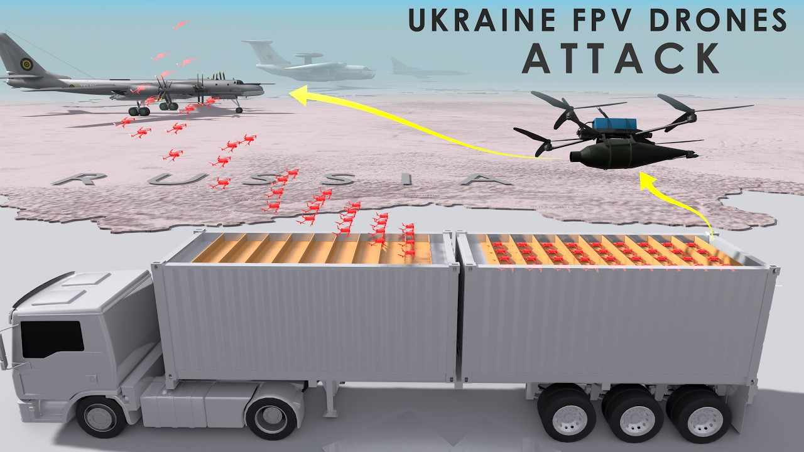

【乌克兰FPV无人机卡车袭击是如何发生的？ #乌克兰 #俄罗斯 #蜘蛛网】
Summary: Ukrainian engineers designed a mobile drone launch system disguised as cargo trucks, enabling covert strikes deep inside Russian territory, damaging strategic air bases and nuclear bombers.
摘要： 乌克兰工程师设计了一种伪装成卡车的移动无人机发射系统，使其能够在俄罗斯境内发动隐蔽袭击，破坏战略空军基地和核轰炸机。

⏱️ Estimated Reading Time: 16 min
Ukrainian engineers designed a clever drone launching system disguised as ordinary wooden cabins mounted on the backs of cargo trucks.
乌克兰工程师设计了一种巧妙的无人机发射系统，伪装成安装在卡车后部的普通木屋。
These mobile containers look like simple rural sheds, but inside they held reinforced structures, hidden launch platforms, battery charging stations, and remote controlled roof mechanisms.
这些移动集装箱看起来像简单的乡村棚屋，但内部装有加固结构、隐藏发射平台、电池充电站和遥控屋顶机构。
The design allowed for drones to be launched either vertically or at an angle depending on their type, while built-in signal shielding helped them avoid early detection by Russian surveillance.
该设计允许无人机根据类型垂直或以一定角度发射，内置信号屏蔽功能帮助其避免被俄罗斯监视系统早期发现。
Once these mobile silos were ready, Ukrainian intelligence operatives, possibly with help from local sympathizers, moved them deep into Russian territory.
一旦这些移动发射装置准备就绪，乌克兰情报人员可能在当地同情者的帮助下将其深入俄罗斯境内。
The trucks were quietly driven to pre-selected sites near key air bases, parked in places like forests, farms, or industrial areas where they blended into the landscape.
卡车被悄悄驶往预先选定的关键空军基地附近地点，停放在森林、农场或工业区等与周围环境融为一体的地方。
They remained dormant for days or even weeks with drones preloaded, charged, and waiting for the command to strike.
它们休眠数天甚至数周，无人机已预装、充电，等待攻击命令。
When the time came, encrypted activation signals were sent remotely.
时机一到，远程发送加密激活信号。
The roofs of the containers slid open and the drones lifted off, some vertically, others using ramps or compressed air launch systems for a silent start.
集装箱屋顶滑开，无人机起飞，有的垂直升空，有的使用斜坡或压缩空气发射系统实现静默启动。
Because the launch sites were positioned just a few kilometers around 2 mi from their targets, the drones were able to reach their objectives quickly, leaving little time for Russian defenses to react.
由于发射点距离目标仅约2英里（3公里），无人机能快速抵达目标，留给俄罗斯防御系统的反应时间极少。
Operators guided them in real time using live video feeds, steering the drones with precision toward park aircraft, fuel depots, and radar installations.
操作员通过实时视频精确引导无人机飞向停放的飞机、燃料库和雷达设施。
Many of the drones carried high explosive or shape charge warheads designed to pierce aircraft fuselages or ignite fuel stores.
许多无人机携带高爆或聚能装药弹头，旨在穿透飞机机身或引燃燃料库。
Some exploded on impact, while others used delayed fuses to cause maximum damage after breaching their targets.
有些在撞击时爆炸，有些则使用延时引信在穿透目标后造成最大破坏。
The operation was more than just a tactical win.
这次行动不仅是战术上的胜利。
It highlighted the growing sophistication of drone warfare and Ukraine's ability to strike deep inside Russian territory.
它突显了无人机战争的日益复杂化以及乌克兰深入俄罗斯境内打击的能力。
In total, 117 drones were launched in a highly coordinated attack that hit at least five major air bases.
总计117架无人机在一次高度协调的袭击中发射，击中了至少五个主要空军基地。
Among the targets were strategic bombers, including aircraft Russia, no longer manufacturers, making their loss even more significant.
目标包括战略轰炸机，其中一些是俄罗斯已停产机型，使其损失更为重大。
These are the area where Ukraine struck 34% of Russia's strategic bomber fleet.
乌克兰此次打击了俄罗斯34%的战略轰炸机队。
Ukraine targeted strategic nuclear bombers at the Blea air base in Siberia.
乌克兰瞄准了西伯利亚布莱亚空军基地的战略核轰炸机。
Other key military installations also came under attack, including the Ivanovo air base northeast of Moscow and the Dagelivo air base south of the capital.
其他关键军事设施也遭到袭击，包括莫斯科东北的伊万诺沃空军基地和首都以南的达格利沃空军基地。
A massive explosion rocked the Arctic city of Severorsque, home to Russia's largest fleet of nuclear submarines.
北极城市北莫尔斯克发生大爆炸，这里是俄罗斯最大核潜艇舰队的驻地。
Ukraine also struck the Alenia Gooa naval base in the Merman region, reaching as far as Siberia.
乌克兰还袭击了摩尔曼斯克地区的阿列尼娅古海军基地，打击范围远至西伯利亚。
The operation inflicted serious damage, reportedly destroying or disabling a significant portion of Russia's strategic bomber fleet.
此次行动造成严重破坏，据报道摧毁或瘫痪了俄罗斯大部分战略轰炸机队。
The strike marked a turning point, not only in the conflict itself, but in the evolution of drone warfare on the modern battlefield.
这次袭击标志着一个转折点，不仅对冲突本身，也对现代战场上无人机战争的演变。
Among the high priority targets were the 295 and 222 strategic bombers, aircraft frequently used by Russia to launch cruise missile attacks deep into Ukrainian territory.
高优先级目标包括295和222战略轰炸机，俄罗斯常用这些飞机向乌克兰境内深处发射巡航导弹。
The A50 airborne early warning and control aircraft vital for coordinating Russian air operations and detecting incoming threats were also targeted.
对协调俄罗斯空中行动和探测威胁至关重要的A50预警机也成为目标。
According to Ukrainian sources, the impact of the strike was substantial.
据乌克兰消息称，此次打击影响重大。
More than 40 aircraft were reportedly hit.
据报道超过40架飞机被击中。
While some were completely destroyed in the explosions, others suffered significant damage, rendering them inoperable for extended periods.
有些在爆炸中完全摧毁，有些严重受损，长期无法运行。
There are reports suggesting that Ukraine may have been using fiber optic control systems which are immune to electronic warfare jamming.
有报道称乌克兰可能使用了抗电子战干扰的光纤控制系统。
At the front of the drone is a camera with an RPG warhead positioned just below it.
无人机前端是摄像头，其正下方装有RPG弹头。
The warhead is flanked by two batteries located here and four propellers.
弹头两侧各有一个电池和四个螺旋桨。
However, the drone has a downside.
但无人机有缺点。
The added weight with a fiber optic reduces its flight time to just 15 to 20 minutes and its range is limited to only 1 mile or less.
光纤增加的重量使其飞行时间仅15-20分钟，航程限制在1英里（1.6公里）以内。
This one compared to a standard drone without fiber optic at travel more than 5 mi which translates to around 10 km.
相比之下，无光纤的标准无人机航程超过5英里（约10公里）。
To understand how Ukraine launched these FPV drones, let's take a look at how they are made.
要了解乌克兰如何发射这些FPV无人机，先看其构造。
First, we have the carbon fiber frame, which provides a lightweight yet strong structure.
首先是碳纤维框架，提供轻量且坚固的结构。
The frame is designed to withstand the stresses of high-speed flight and collisions.
框架设计可承受高速飞行和碰撞的压力。
Next, you'll notice the four propellers, each connected to its corresponding motor.
接下来是四个螺旋桨，每个连接对应电机。
These propellers are strategically designed with opposite angles to ensure smooth and balanced flight.
螺旋桨采用相反角度设计以确保平稳飞行。
This counter rotation helps the drone maintain stability and agility during flight.
反向旋转帮助无人机保持飞行稳定性和敏捷性。
All of this advanced technology requires a central processor or what can be considered the brain of the drone.
这些先进技术需要中央处理器——无人机的大脑。
This role is played by the thin motherboard placed here.
由这块薄主板担任此角色。
As you can see, these are not covered which helps in reducing weight.
可见这些未覆盖以减轻重量。
It manages all the flight operations, processes data from sensors, and translates commands from the remote control into action.
它管理所有飞行操作，处理传感器数据，并将遥控指令转化为动作。
Moving to the back of the drone, we find the cables that connect the motherboard to the power supply, which is provided by the battery.
无人机尾部是连接主板与电池电源的电缆。
The battery is one of the heaviest components of the drone due to its energy density.
电池因能量密度成为无人机最重部件之一。
Depending on its size and capacity, the battery can power the drone for anywhere between 20 to 30 minutes.
根据尺寸和容量，电池可为无人机供电20-30分钟。
Next, let's move.
接下来看。
The propellers and motors also need power and precise instructions to function correctly.
螺旋桨和电机也需要电力及精确指令才能正常运行。
They are connected through a series of cables located here.
它们通过此处的一系列电缆连接。
Both supply power and transmit control signals from the flight controller.
既供电又传输来自飞行控制器的控制信号。
These cables are exposed to minimize weight, ensuring the drone remains as light and efficient as possible.
这些电缆裸露以最小化重量，确保无人机尽可能轻便高效。
At the front of the drone, you'll find a camera that is connected to both the motherboard and the radio receiver, allowing it to transmit live video footage back to the pilot.
无人机前端摄像头连接主板和无线电接收器，可向操作员实时回传视频。
This SE enables the pilot to see exactly where the drone is flying in real time, providing crucial visual information for navigation and target acquisition.
这使操作员能实时查看无人机位置，为导航和目标获取提供关键视觉信息。
However, modern warfare has introduced new challenges.
但现代战争带来新挑战。
For instance, Russian forces are increasingly utilizing electronic warfare systems.
例如俄军越来越多使用电子战系统。
These systems work by jamming the radio signals between the drone and its pilot, effectively disrupting communication and control.
这些系统通过干扰无人机与操作员间无线电信号，有效破坏通信与控制。
When this happens, the pilot loses the ability to see and control the drone, which can lead to mission failure.
此时操作员失去对无人机的视野和控制，可能导致任务失败。
To counter these tactics, the Ukrainians have developed an effective solution, deploying an additional drone to act as a signal enhancer.
为反制，乌克兰开发出有效方案：部署额外无人机作为信号增强器。
This secondary drone strengthens the connection between the primary drone and the pilot, ensuring a stable link even in the presence of electronic interference.
这架辅助无人机加强主无人机与操作员的连接，确保在电子干扰下仍保持稳定链路。
By boosting the signal, this method helps to neutralize the impact of the enemy's electronic warfare units.
通过增强信号，该方法帮助抵消敌方电子战单位的影响。
With this enhanced connection, the pilot regains control and can continue to maneuver the drone toward its designated target, maintaining operational effectiveness despite the enemy's attempts to jam communications.
增强连接后，操作员重获控制权，可继续操纵无人机飞向指定目标，在敌方干扰下保持作战效能。
Finally, we have the warhead located here at the bottom.
最后是底部的弹头。
This particular weapon is an RPG or in full form rocket propelled grenade.
这是RPG，全称火箭推进榴弹。
If we take a closer look inside, we can find the pisoelectric trigger.
细看内部可发现压电触发器。
This trigger mechanism is housed within the RPG warhead and features an air-filled cavity with a conicle liner.
该触发机构位于RPG弹头内，具有带锥形衬里的充气腔。
However, this trigger might not function as intended if the drone is moving too slowly or if it strikes a solid mass like a tank non full force.
但若无人机移动过慢或未全力撞击坦克等固体，触发器可能失效。
In such cases, the pisoelectric trigger may fail to activate.
此时压电触发器可能无法激活。
To address this, an additional trigger mechanism has been installed at the front of the warhead to ensure it detonates on impact either manually by the operator.
为此，弹头前部加装辅助触发机制，确保撞击时爆炸或由操作员手动引爆。
Let's examine this warhead more closely.
进一步观察弹头。
At the front, you'll find the Piso electric trigger.
前端是压电触发器。
The Poelectric trigger is a device that generates a voltage when subjected to deformation, exploiting the Poelectric effect.
压电触发器利用压电效应，在变形时产生电压。
Its purpose is to measure changes in pressure, acceleration, temperature, strain or force by converting these changes into an electrical charge.
其用途是通过将压力、加速度、温度、应变或力的变化转化为电荷来测量这些变化。
Just behind it, there is an airfill cavity and a conicle liner.
其后是充气腔和锥形衬里。
This explosive is intentionally inverted, and this configuration is designed to create a high velocity jet of heat.
炸药故意倒置，该配置旨在产生高速热射流。
This jet is meant to penetrate lightly armored vehicles or in some cases can even damage a main battle tank.
该射流可穿透轻型装甲车辆，有时甚至能损坏主战坦克。
Once the booster propels the rocket out of the tube, the fins on the rocket open up to stabilize its flight path for its intended target.
助推器将火箭推出发射管后，火箭尾翼展开以稳定飞向目标的路径。
Remember the warhead or grenade we talked about earlier?
记得之前提到的弹头/榴弹吗？
This is how it works.
其工作原理如下。
It first hits the po electric trigger which activates the detonator.
首先撞击压电触发器激活雷管。
The warhead along with this conicle liner converges to create a jet of steel and heat ready to penetrate a steel armor plate or vehicle.
弹头与锥形衬里汇聚产生钢铁与热射流，可穿透钢装甲板或车辆。
The drone can also be equipped with different types of ammunition.
无人机还可配备不同类型弹药。
One option is the shotgun effect, where the blast scatters shrapnel over a wide area, increasing the chances of hitting enemy soldiers.
一种是霰弹效果，爆炸时破片大面积散射，提高命中敌军的概率。
This mechanism can be manually triggered by the operator, allowing for greater control and creating a more significant impact on the battlefield.
该机制可由操作员手动触发，实现更强控制力和战场影响力。
The reason Ukraine took out these strategic nuclear bombers because they have been wrecking havoc.
乌克兰摧毁这些战略核轰炸机因其造成严重破坏。
Let's take a look at how they might work.
看看它们如何运作。
The three planes can work together as nuclear and attack aircraft.
三架飞机可作为核攻击机协同作战。
In stage one, the 222M can sweep in and target enemies using KH22 or 32 long range supersonic anti-shipping cruise missiles or the Kinsel specifically designed to engage US Navy super carriers.
第一阶段，222M可利用KH22或32远程超音速反舰巡航导弹或专为攻击美海军超级航母设计的"金赛尔"导弹突袭锁定目标。
Meanwhile, the Tupole of 295 can be positioned as a command and control center while also striking less defended infrastructures like the usual communication towers.
同时图-295可作为指挥控制中心，并攻击通信塔等防御较弱的基础设施。
This slows down the enemy response in the battlefield.
这会延缓敌方战场反应。
Finally, the 2160 Blackjack, also known as the White Swan, would launch cruise missiles once in range.
最后，图-160"黑杰克"（又称"白天鹅"）进入射程后发射巡航导弹。
These missiles would travel low and slow under enemy radar to reach her targets.
这些导弹低空慢速飞行避开敌方雷达抵达目标。
This tactic is typical for all bombers in a nuclear war scenario.
这是核战争场景中所有轰炸机的典型战术。
The 2160 can open its weapon bay doors and release nuclear cruise missiles one after another.
图-160可打开弹舱逐一发射核巡航导弹。
These cruise missiles deploy their wings when dropped and it can fly towards their targets, creating a nuclear explosion upon impact.
这些巡航导弹投放后展开弹翼飞向目标，撞击时产生核爆炸。
However, the aftermath of such an attack can cause a nuclear fallout.
但此类攻击的后果可能导致核辐射。
When a nuclear weapon detonates, dust mixed with radioactive fishing products are drawn into the detonation's radius, even spreading towards the attacker's own country and people.
核武器爆炸时，混有放射性物质的尘埃被吸入爆炸半径，甚至扩散至攻击者本国及人民。
This nuclear dust can spread all through Europe, Russia, China, and even the rest of Asia.
这些核尘埃可能扩散至整个欧洲、俄罗斯、中国乃至亚洲其他地区。
If this happens to explode midair, this creates a situation where nobody wins as it affects a lot of people, including those who initiated the attack.
若在空中爆炸，将造成无人获胜的局面，因受影响者包括攻击发起者。
Do check out our original animated video on anti-aircraft gun like the M2 Browning, how to fire at an enemy aircraft, and the Zu23 and how to operate them.
请观看我们关于M2勃朗宁高射炮如何射击敌机及ZU23操作的原版动画视频。
So stay subscribed to not miss a
敬请订阅以免错过